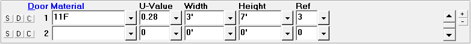

Doors (Room Data, Default Room Data Windows) |
  
|
Doors (Room Data, Default Room Data Windows) |
|

You should only specify an exterior, non-glass door with this entry. Glass doors are entered into the Glass frame above. Directly below the word Door are the door reference numbers which cannot be changed. Each door has a wall reference number. This number tells Rhvac which direction the door faces and allows the program to subtract the area of the door from the appropriate wall.
S Button (Save Material to Default Room): Saves the material to the Default Room Data window. If the material is already in the list of default materials it will be updated if needed.
D Button (Insert Default Material): Copies the default material from the Default Room Data window to the Room Data window. If more than one default material has been defined, a popup menu will let you select which of your default materials to copy. For row 1, this button works like the Copy Above or Default and Room Dimension menu item and toolbar button, while on rows 2 and up it works like the Insert Only Default Room Data menu item and toolbar button.
C Button (Copy Above Material): Copies the material from the above row. This button is disabled for material number 1. For rows 2 and up, works the same as the Copy Above or Default and Room Dimension menu item and toolbar button.
Door Material: This entry corresponds to the two types of non-glass doors allowed by Manual J. Click on the drop-down list arrow to display the Door Material dialog. Note that when you type or select a valid door construction code, the reference defaults to 1. A complete list of the various material types is also shown in Appendix H of this manual and page 68 (Table 2) and page 81 (Table 4) of Manual J. Mobile home information is shown in Appendix A-1 of Manual J.
U-Value: If you enter one of the standard construction code and door types Rhvac will display a suggested U-Value for you. This U-Value corresponds to the U-Values listed in Table 2 (pages 68) of Manual J. You also have the option of entering your own U-Value. Rhvac will then use the U-Value you entered when calculating the heat transfer due to doors. Note that the U-Value is determined by dividing the number 1 by the R-value. The valid range of inputs for this field is 0.000 to 9.999 Btuh/(sq. ft. F).
Width and Height: The width and height of the door are entered in feet, and should correspond to the gross area of the door that is exposed to the outside air. In cases where the door is not rectangular and it is not possible to give a single width and height, you should consider entering the height as 1 foot and the width as the actual area. The main point to remember is that the product of the door width and height entries should be equal to the actual door area. Note that the door area entered here will be subtracted from the wall area of the reference wall. The width and height of a door can be 0.0 to 999.9 feet each.
Wall Reference Number for Door (Ref): This entry is a number that corresponds to one of the walls entered above. Every door must have a wall reference number. Valid wall reference numbers are 1 to 20. This number tells the Rhvac program what direction the door faces as well as allowing the program to subtract the area of the door from the appropriate wall. (Be sure the door area does not exceed the wall area!) If the door is surrounded by two different wall types you should enter the door in two parts corresponding to each wall type. For example, if the building had four foot high face brick and the rest of the wall was wood frame, you would enter the first four feet of the door referencing the face brick wall and the rest of the door referencing the wood frame wall. Be sure the total area of the two door sections does not exceed the actual area of the door. Note that when you type or select a valid door construction code, the reference defaults to 1.
Scrollbar: Use the scrollbar to scroll up and down through the list of doors for the room.
Plus and Minus Buttons: Click the plus and minus buttons to increase or decrease the number of doors visible at a time.